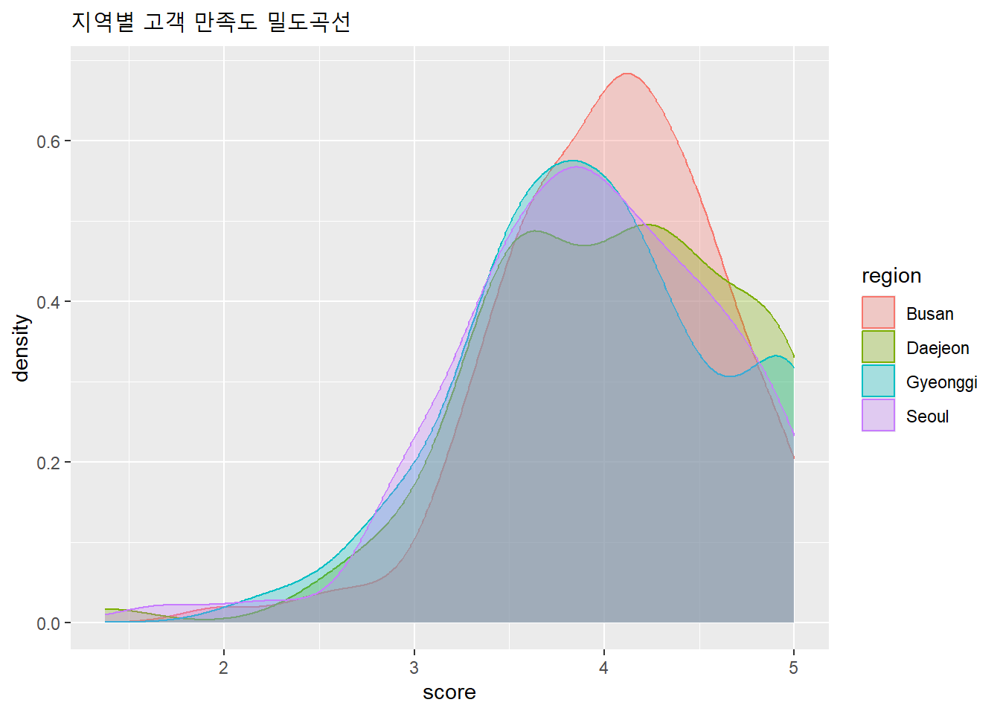
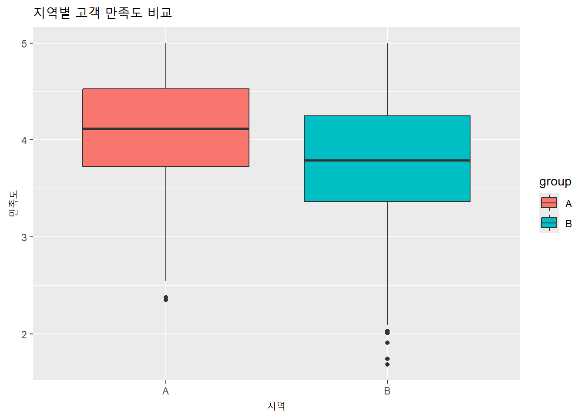
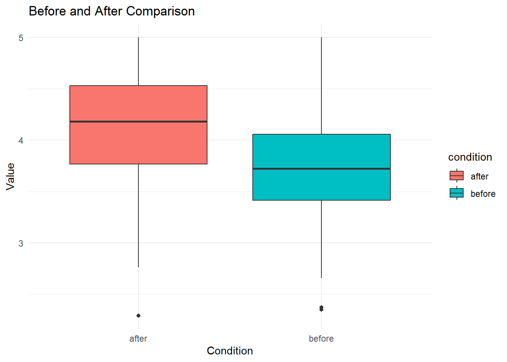

기술통계는 데이터를 설명하고 해석하기 위한 가장 기본적인 도구다. 복잡하고 방대한 데이터셋을 몇 개의 숫자와 도표로 요약함으로써, 어떤 패턴이 존재하는지, 어떤 값들이 중심을 이루는지, 극단적인 이상값이 있는지를 빠르게 파악할 수 있게 한다. 단순히 데이터를 보는 것만으로는 알 수 없는 숨어 있는 구조와 특성을 꺼내는 역할을 한다.
예를 들어 1,000명의 고객 만족도 설문 결과가 있다고 해보자. 각 고객은 1점(매우 불만족)부터 5점(매우 만족)까지 응답했으며, 엑셀 시트에는 1,000개의 숫자가 나열되어 있다. 이때 단순히 숫자들을 보는 것만으로는 어떤 판단도 내릴 수 없다. 하지만 평균, 중앙값, 분산, 표준편차, 히스토그램 등을 통해 요약하면 고객들의 전반적인 만족 수준을 이해할 수 있다.
기술통계는 모든 분석의 출발점이다. 회귀분석이든 머신러닝이든, 먼저 데이터가 어떻게 생겼는지를 살펴보지 않으면 잘못된 전처리와 해석을 유발하게 된다. 따라서 기술통계는 단순한 수치의 나열이 아니라, 데이터에 대한 탐색적 시각을 길러주는 관문이다.
많은 통계 및 분석 초보자들이 하는 실수 중의 하나가 바로 이 기초적인 기술통계를 무시하는 것이다. 기술통계를 무시하면 분석할 데이터가 어떻게 생겼는지 정확히 이해하지 못한 채로 분석을 하게되는 것이다. 아무리 어렵고 복잡하고 최신의 분석방법을 적용해서 분석한다고 해도, 기초적인 데이터의 모양 조차 제대로 이해하지 못하면 결국 엉뚱한 분석을 하거나 심지어 잘못된 분석을 하게되는 결과가 된다. 데이터가 어떻게 생겼는지 이해하는 것이 모든 분석의 시작이다.
데이터가 어떻게 생겼는지 이해하는 가장 기본적인 방법이 바로 데이터의 중심과 퍼진 정도이다. 데이터의 중심과 퍼진 정도를 알면 데이터가 대략적으로 어떻게 생겼는지 이해할 수 있기 때문에 모든 기초 통계학 책의 가장 앞부분에는 바로 이러한 내용이 등장하는 것이다. 쉽다고 무시하거나 그냥 넘어가면 결국 기초가 부실한 분석가가 될 수 밖에 없다.
3.1.2 중심경향치(Mean, Median, Mode)의 의미
중심경향치는 데이터의 중심값이 어디쯤에 위치하는지를 알려준다. 가장 대표적인 중심경향치는 평균(mean), 중앙값(median), 최빈값(mode)이다. 각각의 지표는 서로 다른 상황에서 중요한 해석을 제공한다.
평균은 모든 값을 더한 후 개수로 나눈 값이다. 계산은 간단하지만, 극단값(outlier)에 민감하다는 단점이 있다. 예를 들어 직원 연봉의 평균을 계산할 때 CEO의 수십억 원 연봉이 포함되면, 전체 평균이 실제 대다수 직원의 현실을 반영하지 못할 수 있다.
중앙값은 데이터를 크기순으로 정렬했을 때 중앙에 위치한 값이다. 평균보다 극단값의 영향을 덜 받기 때문에, 소득이나 부동산 가격처럼 분포가 치우친 데이터에서는 중앙값이 더 나은 대표값이 된다. 실제로 통계청이 발표하는 중위소득은 이 개념을 활용한 것이다.
최빈값은 가장 자주 등장한 값으로, 주로 범주형 자료에서 활용된다. 예를 들어 고객의 가장 선호하는 메뉴가 무엇인지, 가장 많이 구매한 제품은 무엇인지 파악할 때 유용하다.
이 세 가지는 같은 방향을 말하는 듯하지만, 분포의 형태에 따라 서로 다른 해석을 요구한다. 예를 들어 다음과 같은 고객 만족도 분포를 보자:
고객 ID
만족도 점수
1
5
2
5
3
5
4
1
5
1
이 경우 평균은 3이지만, 대부분의 고객은 5점 또는 1점으로 극단적인 반응을 보였다. 평균만 보면 ‘그럭저럭 만족’ 같지만, 실제로는 양극화된 고객 반응을 숨기고 있다. 그래서 중심경향치만 보고 판단해서는 안 되고, 반드시 분산과 표준편차 등과 함께 해석해야 한다.
3.1.3 산포도(Variance, Standard Deviation, IQR)의 역할
중심값이 어디 있는지를 파악했다면, 이제 중요한 것은 그 주변에 데이터가 얼마나 흩어져 있는가이다. 산포도는 데이터의 퍼짐 정도를 수치로 요약한다. 대표적인 지표로는 분산(variance), 표준편차(standard deviation), 사분위 범위(IQR)가 있다.
표준편차는 데이터가 평균을 중심으로 얼마나 흩어져 있는지를 보여준다. 표준편차가 작으면 대부분의 데이터가 평균 근처에 모여 있고, 크면 데이터가 넓게 퍼져 있음을 의미한다. 예를 들어 두 카페의 고객 만족도 평균이 둘 다 4.2점이라도, 표준편차가 A카페는 0.5점, B카페는 1.9점이면 두 가게는 완전히 다른 상황이다. A카페는 대부분 고객이 안정적으로 만족한 반면, B카페는 어떤 고객은 매우 만족하고 어떤 고객은 불만족했다는 뜻이다.
분산은 표준편차를 제곱한 값으로 해석이 어려워 실무에서는 잘 사용되지 않지만, 통계적 모형의 기본 구조를 구성할 때 활용된다.
IQR(Interquartile Range)은 1사분위수(Q1)와 3사분위수(Q3)의 차이로 정의된다. 이 지표는 이상치에 민감하지 않기 때문에 비정규분포나 극단값이 많은 데이터에서 안정적인 분산 지표가 된다. 예를 들어 소비자 지출 데이터에서 IQR이 작으면 지출 패턴이 비교적 일정하고, 크면 고액 지출자가 일부 존재할 가능성을 시사한다.
산포도를 살피지 않고 평균만 보는 것은 마치 기온 예보에서 ’오늘 평균 기온은 15도입니다’만 듣는 것과 같다. 실제로는 아침에 3도, 낮에 27도였을 수도 있다. 평균은 중심이지만, 산포도는 맥락이다.
3.1.4 왜 기술통계가 비즈니스 의사결정에 중요한가?
비즈니스 현장에서는 모든 의사결정이 불완전한 정보 속에서 이루어진다. 이때 기술통계는 제한된 데이터를 최대한 압축해서 의미 있는 요약 정보로 변환해준다. 마케팅, 운영, 인사, 재무 모든 영역에서 기술통계는 ’첫 판단’을 위한 토대를 제공한다.
예를 들어 광고 캠페인을 진행한 후 고객 유입수가 이전보다 1,000명 증가했다면, 그 자체로는 성공인지 실패인지 알 수 없다. 고객의 평균 구매 금액, 방문 빈도, 이탈률 등 여러 수치를 요약하고 비교해야만 진정한 효과를 알 수 있다. 이때 기술통계는 ROI를 판단하는 출발점이 된다.
또한 서비스 품질 관리에서도 기술통계는 핵심 역할을 한다. 고객 불만 처리 시간이 평균 20분으로 줄었다고 해도, 표준편차가 15분이라면 여전히 서비스 품질의 일관성은 낮은 상태다. 품질 개선은 평균만이 아니라 변동성을 줄이는 작업임을 보여준다.
경영자는 수천 개의 숫자 중 어떤 지표를 봐야 할지 모를 때, 기술통계를 통해 핵심 요약지표를 설정하고 데이터에 기반한 결정을 내릴 수 있다.
3.1.5 고객 만족도 평균은 4.2점인데, 표준편차가 1.9라면?
어떤 카페에서 1,000명의 고객을 대상으로 만족도 조사를 실시했더니 평균은 4.2점이었다. 이를 보고 사장은 “대부분 고객이 만족했군”이라고 판단했다. 하지만 표준편차가 1.9점이라는 사실을 확인하면 상황이 달라진다.
만족도 점수는 1점에서 5점까지인데, 표준편차가 1.9면 데이터의 분산이 매우 크다는 뜻이다. 정규분포를 가정하면 평균 ± 1.9 범위, 즉 2.3점부터 6.1점(6점은 최대치를 넘음)이 대부분이다. 현실적으로는 1점 또는 5점이 다수일 가능성이 크며, 이는 고객 반응이 극단적으로 양극화되었음을 의미한다.
이 경우 단순한 평균 만족도는 실제 서비스 품질을 대표하지 않는다. 일부 고객은 매우 불만족했고, 일부는 매우 만족했을 수 있으며, 이는 매장의 서비스 편차 혹은 일관되지 않은 고객 경험을 시사한다.
기술통계를 해석할 때는 항상 중심값과 산포도를 함께 고려해야 한다. 평균이 높다고 항상 좋은 것은 아니며, 그 주변에 어떤 스토리와 구조가 숨겨져 있는지를 파악하는 능력이 데이터 리터러시의 핵심이다.
3.2 데이터 분포의 이해: 시각화를 통한 통찰
3.2.1 히스토그램: 연속형 변수의 분포 형태 확인
데이터가 어떻게 분포되어 있는지를 시각적으로 확인하는 가장 기본적인 방법은 히스토그램이다. 히스토그램은 연속형 변수의 값을 일정 구간(bin)으로 나누고, 각 구간에 속하는 데이터 개수를 세어 막대그래프로 표현한다. 이를 통해 데이터의 분포 형태(대칭성, 치우침, 뾰족함)를 한눈에 볼 수 있다.
예를 들어 한 프랜차이즈 카페의 하루 매출 데이터를 100일간 수집했다고 하자. 매출 데이터를 히스토그램으로 시각화하면 특정 금액대에 매출이 집중되어 있는지, 고르게 분포되어 있는지, 또는 극단적인 매출이 있었는지를 파악할 수 있다.
다음 두 매장의 일매출 히스토그램을 비교해보면 이해가 빠르다.
매장
히스토그램 해석
A매장
대부분 매출이 80만~100만 원에 몰려 있음. 안정적인 매출 구조.
B매장
매출이 30만~150만 원까지 넓게 퍼져 있고 극단값 존재. 불안정한 패턴.
히스토그램은 분포의 형태를 직관적으로 보여주지만, 구간의 개수(bin의 수)에 따라 그래프의 모양이 달라질 수 있기 때문에 왜곡 가능성이 존재한다. 따라서 적절한 bin 설정이 중요하며, 이를 고정된 기준으로 설정하기보다 데이터를 기반으로 조정하는 능력이 필요하다.
3.2.2 박스플롯(Boxplot): 이상치 탐색과 중앙값 중심 비교
박스플롯은 데이터의 중심값과 퍼짐 정도, 이상치를 함께 보여주는 강력한 도구다. 데이터의 1사분위수(Q1), 중앙값(Q2:median), 3사분위수(Q3), 그리고 그 외의 이상값(outlier)을 간단한 그림 하나로 표현한다.
예를 들어 전국 커피 매장의 1인당 객단가 데이터를 비교할 때, 박스플롯은 각 매장의 객단가 분포와 이상치를 동시에 보여줄 수 있다. 서울 매장과 부산 매장의 박스플롯을 나란히 보면, 두 도시의 소비패턴이 얼마나 다른지 명확히 드러난다.
서울 매장의 경우 중앙값이 높고 이상치가 거의 없다면, 고객층이 고르게 높은 금액을 지출하고 있음을 의미한다. 반면 부산 매장은 중앙값은 비슷하지만, 위쪽 이상치가 많다면 소수의 고액 소비자들이 평균을 끌어올리고 있을 가능성이 있다.
박스플롯의 또 다른 강점은 여러 그룹의 데이터를 나란히 비교할 수 있다는 점이다. 예를 들어 성별, 지역, 요일별로 박스플롯을 그리면 단숨에 차이를 식별할 수 있다.
3.2.3 밀도곡선: 정규분포 유사성 파악
밀도곡선은 히스토그램을 부드럽게 연결한 곡선 형태로, 데이터를 부드러운 분포곡선으로 나타내는 방법이다. 확률 밀도함수 형태를 통해 데이터가 정규분포를 따르는지 시각적으로 진단할 수 있다.
예를 들어 고객의 방문 시간대를 시간(예: 오전 8시~오후 10시)으로 기록한 뒤 밀도곡선을 그리면, 고객이 몰리는 시간이 언제인지 명확히 보인다. 만약 오전 10시와 오후 3시에 봉우리가 있다면, 해당 시간대에 집중적인 마케팅이나 인력 배치를 고려해야 한다.
밀도곡선은 여러 그룹을 겹쳐서 비교할 때 특히 유용하다. 예를 들어 남성과 여성의 방문 시간 밀도곡선을 비교하면, 성별에 따라 방문 패턴이 어떻게 다른지 확인할 수 있다. 이처럼 단순히 평균이 같은지만이 아니라, 분포의 형태까지 고려한 분석이 가능해진다.
3.2.4 그룹별 시각화
분포를 그룹별로 나누어 비교하면, 집단 간 차이나 특성을 보다 명확하게 파악할 수 있다. 특히 박스플롯과 밀도곡선은 그룹 간 비교에 최적화된 시각화 방법이다.
예를 들어 서울, 경기, 부산, 대전의 고객 만족도 점수를 박스플롯으로 그려보면, 각 지역 고객의 반응이 얼마나 다른지 명확하게 드러난다. 서울은 중앙값이 높고 분포가 좁지만, 부산은 분포가 넓고 이상치도 많을 수 있다. 이 차이는 단순히 평균으로는 파악하기 어렵다.
또한 지역별 만족도 밀도곡선을 그리면, 특정 지역의 분포가 한쪽으로 치우쳐 있는지, 두 개 이상의 봉우리를 가지는 이중분포인지 등을 확인할 수 있다. 이 경우 마케팅 전략을 지역별로 다르게 설계할 필요가 있다.
3.2.5 ggplot2로 고객 만족도 분포 시각화
아래는 가상의 고객 만족도 데이터를 이용한 시각화 예제이다. 각 시각화는 ggplot2 패키지를 활용하며, 데이터 프레임은 data.frame(region, score) 구조를 가진다고 가정한다.
# 밀도곡선 (지역별 비교)ggplot(data, aes(x = score, color = region, fill = region)) +geom_density(alpha =0.3) +labs(title ="지역별 고객 만족도 밀도곡선")

토론: 히스토그램이 왜 왜곡될 수 있는가?
히스토그램은 bin의 개수에 따라 서로 다른 그림을 그릴 수 있다. 동일한 데이터를 5개 구간으로 나눌 때와 20개 구간으로 나눌 때, 분포의 모습은 완전히 달라 보인다. 구간이 너무 적으면 데이터의 미세한 구조가 사라지고, 너무 많으면 오히려 노이즈가 강조될 수 있다.
다음은 동일한 데이터를 서로 다른 bin으로 시각화한 예이다.
구간 수
해석 가능성
5개
전체적 패턴은 보이지만, 세부 구조는 파악 불가능
20개
과도하게 세분화되어 노이즈가 강조됨
토론 질문: 학생 A는 히스토그램을 보고 “대부분 고객이 평균 근처에 있다”고 말한다. 학생 B는 “극단값이 많아 왜곡된 분포다”라고 말한다. 두 사람의 의견 중 누구의 해석이 더 타당한가? 어떤 시각화 방식이나 수치를 추가로 제시해야 판단이 가능할까?
히스토그램은 직관적인 도구지만, 그 해석은 분포의 형태, 구간 설정, 데이터 수의 충분성에 따라 달라질 수 있다. 시각화를 ’정답’처럼 받아들이기보다는, 항상 보완적인 해석과 함께 사용하는 태도가 필요하다.
Copilot 프롬프트 예시: score에 대한 히스토그램을 그려줘. 한개는 bin의 개수를 5개로 다른 한개는 bin의 개수를 20개로 만들어줘.
# A tibble: 4 × 6
region 평균 중앙값 표준편차 최소값 최대값
<chr> <dbl> <dbl> <dbl> <dbl> <dbl>
1 Busan 4.02 4.07 0.565 1.97 5
2 Daejeon 4.03 4.10 0.693 1.37 5
3 Gyeonggi 3.96 3.92 0.672 2.12 5
4 Seoul 3.92 3.89 0.667 1.58 5
3.3 One-sampe t-test
3.3.1 t-검정이란 무엇인가?
t-검정(t-test)은 어떤 평균값이 기준값(내가 관심이 있는 값)과 통계적으로 같은지 혹은 다른지를 판단하기 위한 검정 방법이다. 특히 단일표본 t-검정(one-sample t-test)은 하나의 표본 평균이 특정 수치(예: 업계 기준, 목표치, 전년도 수치 등)와 차이가 있는지를 평가한다. 평균 비교를 통해 가설을 검정하는 방식으로, 실무에서 매우 자주 사용된다.
예를 들어 한 커피 브랜드가 전국 매장의 고객 만족도 평균을 4.0 이상으로 유지하고 있다고 주장한다고 하자. 이때 서울 지역 매장 30곳의 평균 만족도가 4.2로 나타났다면, 단순히 4.2가 크다고 해서 본사의 기준을 초과했다고 단정할 수 없다. 표본 수가 작거나, 표준편차가 크면 우연에 의한 결과일 수 있기 때문이다. 이런 경우에 t-검정을 통해 차이가 통계적으로 유의미한지를 판단해야 한다.
3.3.2 귀무가설 vs 대립가설
모든 검정은 두 가지 가설 사이의 대립 구조를 기반으로 한다. 귀무가설(null hypothesis, \(H_0\))은 ‘차이가 없다’, ‘변화가 없다’, ‘효과가 없다’는 전제를 놓고 시작한다. 대립가설(alternative hypothesis, \(H_a\))은 그 반대로, ’차이가 있다’, ’효과가 있다’는 주장을 담고 있다.
예를 들어, 한 음식 배달 앱이 “새로운 UI 도입 후 사용자 만족도가 기존보다 높아졌다”고 주장한다면, 귀무가설은 다음과 같이 설정할 수 있다:
-\(H_0\): 사용자 만족도 평균은 4.0이다. -\(H_a\): 사용자 만족도 평균은 4.0이 아니다.
검정의 목표는 귀무가설을 기각할 수 있는가이다. ’대립가설을 입증’하는 것이 아니라, 귀무가설이 사실일 가능성이 매우 낮다는 근거를 제시함으로써 그것을 기각하는 방식이다. 이 점은 통계 검정에서 가장 많이 오해되는 부분이다.
3.3.3 표본평균과 모평균의 차이 검정
단일표본 t-검정은 주어진 표본의 평균이 특정 모평균(예: 업계 기준치, 정책 목표값 등)과 통계적으로 유의미하게 다른지를 평가한다. 여기서 핵심은 단순한 수치의 차이가 아니라, 표본의 불확실성(표준오차)을 고려하여 차이를 판단한다는 점이다.
예를 들어, A지역 카페의 평균 객단가가 5,200원이고, 업계 기준이 5,000원이라면 200원의 차이가 존재한다. 그러나 이 표본이 10개의 매장으로 구성되어 있고, 매장 간 편차가 크다면 이 차이는 우연일 가능성이 높다. 반면 500개의 매장으로 구성되어 있고 편차가 작다면, 200원의 차이는 유의미하다고 판단될 수 있다.
즉, 표본의 수와 분산을 함께 고려해야만 의미 있는 비교가 가능하다. 이것이 바로 t-검정의 본질이다.
3.3.4 단일표본 t-검정 수식 해설
단일표본 t-검정에서 사용되는 기본 공식은 다음과 같다:
\[
t = \frac{\bar{x} - \mu_0}{s / \sqrt{n}}
\]
여기서 각 기호의 의미는 다음과 같다:
기호
의미
\(\bar{x}\)
표본의 평균
\(\mu_0\)
비교 대상이 되는 기준값(모평균)
\(s\)
표본의 표준편차
\(n\)
표본의 크기
분모인 \(s/\sqrt{n}\)은 표준오차(Standard Error)로, 표본평균이 얼마나 흔들릴 수 있는지를 나타낸다. 분자가 클수록, 또는 분모가 작을수록 t값은 커지고, 이는 곧 기준값과의 차이가 크다는 것을 의미한다.
t값이 클수록 기준값과의 차이가 명확해지며, 이때의 t값을 표준 분포와 비교하여 p-값을 계산하게 된다.
3.3.5 신뢰수준과 p-값의 해석
t-검정에서 도출되는 p-값은 귀무가설이 참이라는 가정 하에, 지금과 같은 또는 더 극단적인 결과가 나올 확률을 의미한다. 흔히 p < 0.05를 유의수준(신뢰수준 95%)으로 사용하여, 이 기준을 넘기면 귀무가설을 기각한다.
예를 들어 한 디저트 카페의 고객 재방문율을 단일표본 t-검정으로 평가했더니 p-값이 0.012가 나왔다면, 이는 1.2%의 확률로 우연히 이런 결과가 나올 수 있다는 뜻이다. 일반적인 해석은 “유의미한 차이가 존재한다”는 결론이다.
하지만 p-값이 작다고 해서 효과가 크다는 것은 아니다. 통계적 유의성과 실질적 의미는 다르다는 점을 반드시 강조해야 한다. 예를 들어 1만 명의 고객 데이터를 분석해서 p < 0.001을 얻었다 해도, 그 차이가 실제 경영 의사결정에 영향을 미칠 정도인지 검토가 필요하다.
3.3.6 정규성 가정과 검정의 유효성
단일표본 t-검정은 기본적으로 데이터가 정규분포를 따른다는 가정을 전제로 한다. 이는 표본의 크기가 작을수록 중요하게 작용한다. 예를 들어 표본이 10개 미만인 경우, 데이터가 극단적으로 왜곡되어 있다면 t-검정의 결과는 신뢰할 수 없다.
그러나 표본의 크기가 충분히 크면(통계학에서는 일반적으로 \(n \ge 30\)) 중심극한정리에 따라 데이터가 정규분포가 아니더라도 근사적으로 정규성을 갖게 된다고 본다. 이 경우에는 정규성 가정이 크게 문제되지 않는다고 본다. 문제는 이러한 내용이 사실 상당한 오해로 인한 잘못된 사실이라는 점이다. 이 내용을 좀 자세하게 설명하자면, 표본 크기가 30개인 표본을 N번 뽑아서 각 표본의 평균값을 모아보면, N개의 평균값이 나오는데, 이 표본 평균의 분포는 N이 증가할 수록 정규분포와 비슷해진다 (또는 정규분포를 따른다)라는 의미이다. 따라서, 단 한 번 표본을 뽑았을 때, 표본의 크기가 30개 정도면 괜찮다 혹은 문제가 없다는 의미가 아닌 것이다. 한 가지 더 이야기 하자면, 표본 오차란 사실 이 N개의 평균값으로 만든 표본 평균의 분포의 표준오차를 의미한다. 이게 왜 중요하냐면, 우리가 표본을 뽑는 이유는 현실적으로 모집단 전체를 조사할 수 없기 때문이다. 따라서, 표본의 크기가 30개만 넘으면 아무 문제가 없다는 식의 접근은 매우 위험하다.
정규성 여부는 시각화(히스토그램, Q-Q plot)나 정규성 검정(Shapiro-Wilk test 등)을 통해 판단할 수 있다. 예를 들어 고객의 식사시간 데이터가 지나치게 오른쪽으로 꼬리가 길게 늘어진다면(log-normal 분포), 정규성 가정을 만족하지 않을 수 있으므로 주의가 필요하다.
실무에서는 정규성이 의심되는 경우, 정규화 처리(log 변환) 또는 비모수 검정(Wilcoxon signed-rank test) 등 대체 방법을 사용하는 것이 바람직하다.
3.4 Two-sample t-test
3.4.1 Two-sample t-test란 무엇인가?
Two-sample t-test는 두 집단의 평균이 서로 같은지 다른지를 검정하는 통계적 방법이다. 단일표본 t-검정이 하나의 표본 평균과 기준값을 비교했다면, 여기서는 두 개의 서로 다른 표본 집단 간 평균을 직접 비교한다. 이 검정은 마케팅, 인사관리, 품질관리 등에서 자주 사용된다.
중간질문: 그렇다면, 두 집단이 동질적인지 이질적인지 판단하고자 할 때, 왜 두 집단의 평균값을 비교할까?
예를 들어 A지역과 B지역에 동일한 커피 매장을 열었고, 1개월간의 고객 만족도 데이터를 수집했다고 하자. 각 지역에서 50명의 고객에게 점수를 받았고, A지역의 평균은 4.3, B지역은 4.0이다. 이 결과만 보고, A지역의 커피 매장의 서비스와 품질이 B지역의 매장보다 좋다고 판단할 수 있을까? 이런 판단은 통계적 의사결정이 아닌 직관적 의사결정이며, 평균값을 단순히 비교했다고 해서 통계라고 할 수 없다. 왜 일까?
단순히 평균을 비교하는 것은 의미가 없다. 이 차이가 통계적으로 유의미한지를 확인하려면, two-sample t-test를 수행해야 한다.
통계적 의사결정이란 통계적인 사고와 질문에서 출발한다. “두 지역 매장의 평균값이 0.3점 차이가 났는데, 이 차이가 우연히 발생할 확률은 얼마일까?”라고 질문하는 것부터가 통계의 시작이고, 이 질문에 답하는 것이 통계적 사고이며 통계적 의사결정이다.
3.4.2 독립표본 t-test와 대응표본 t-test의 구분
두 표본 간 비교를 할 때, 그 표본이 독립적인가 아니면 짝지어져 있는가를 먼저 판단해야 한다. 독립표본 t-test(independent samples t-test)는 서로 전혀 관련 없는 두 집단을 비교할 때 사용된다. 예를 들어 남성과 여성 고객의 만족도를 비교하거나, 두 개의 서로 다른 매장을 비교하는 경우가 여기에 해당한다.
반면 대응표본 t-test(paired t-test)는 두 표본이 쌍으로 연결되어 있을 때 사용된다. 예를 들어 동일한 고객이 리뉴얼 전과 후에 서비스를 이용한 만족도를 비교하는 경우, 같은 사람이 두 번 응답했기 때문에 두 관측치는 연결되어 있다. 이럴 경우에는 변화 자체를 분석해야 하므로 대응표본 검정을 적용해야 한다.
3.4.3 독립표본 t-test의 수식과 해석
독립표본 t-test의 수식은 다음과 같다:
\[
t = \frac{\bar{x}_1 - \bar{x}_2}{\sqrt{\frac{s_1^2}{n_1} + \frac{s_2^2}{n_2}}}
\]
여기서 \(\bar{x}_1, \; \bar{x}_2\)는 각 집단의 평균, \(s_1^2, \; s_2^2\)는 분산, \(n_1, \; n_2\)는 표본 크기다. 분모는 두 집단 평균의 차이가 얼마나 흔들릴 수 있는지를 나타내는 표준오차다.
t값이 커질수록, 즉 평균 차이가 크다는 의미이기 때문에, 두 집단의 평균값이 다르다고 판단할 확률은 커진다. 여기서 주의깊게 볼 부분은 t값을 계산하는 공식이 아니다. 왜 이런 공식이 나왔을까를 논리적으로 생각해야한다. 우리의 목적은 기본적으로 두 집단이 동질적인지 이질적인지 즉, 같은지 다른지 알고싶은 것이다. 문제는 두 집단이 같은지 다른지 알기 위해서 두 집단의 대표값이 평균값을 이용해 비교하는 것이 핵심이다. 즉 위의 공식에서 분자부분인 \(\bar{x}_1 - \bar{x}_2\)가 바로 우리의 핵심적인 관심사다. 두 집단의 평균값의 차이가 크다면 두 집단은 다를 확률이 높을 것이고, 두 집단의 평균값이 작다면 두 집단은 같은 집단일 확률이 높을 것이다.
우리는 위에서 이미 두 집단의 평균값의 차이가 0.3이라는 사실을 알았다. 이 두 집단의 평균값의 차이인 0.3은 큰 차이인가 아니면 작은 차이인가?
쉽게 대답하기 어려운 질문이다. 왜냐하면, 얼마나 커야 큰 것인지 혹은 얼마나 작아야 작은 것인지 판단하기 어렵기 때문이다. 단순히 이 차이값의 절대값의 크기가 크다 작다로 판단하기에는 단위의 크기에 너무 민감하게 반응하기 때문에 판단이 쉽지 않다. 그렇다면, 우리는 이 차이가 큰지 혹은 작은지 판단하기 위해 어떤 전략을 사용해야할까? 생각해 보라.
가장 효율적인 전략은 바로 이 평균값의 차이와 동일한 개념의 다른 값을 가져와서 비교하는 것이다. 여기서 우리는 다시 기술통계를 떠올려야 한다. 어떤 값을 가져와서 비교하면 좋을까?
바로, 분산 또는 표준편차이다. 이름에서 알 수 있듯이 표준편차란 일종의 편차 즉 차이이다. 정확하게는 평균값을 중심으로 데이터가 퍼져있는 평균적인 거리이다. 중요한 것은 이 편차는 의미있는 편차일까? 아니면 의미 없는 편차일까? 여기서 의미라는 것은 어떤 이유를 뜻한다. 즉, 표준편차의 편차가 발생한 원인이 어떤 원인이 분명하게 있는 것인지, 아니면 이 편차가 랜덤(random)하게 무작위적으로 발생한 것인지 알아야 한다. 둘 줄 무엇일까?
표준편차의 편차는 기본적으로 랜덤하게 발생한 무작위적 편차로 이해한다. 즉, 이러한 편차가 어떠한 특정한 원인에 의해 발생한 것이 아니라는 의미이다. 즉, 이는 이유없는 편차이고 따라서 의미 없는 편차이다. 그렇다면, 이 편차가 왜 우리가 필요로 하는 비교대상으로 좋은 것일까?
우리의 관심사는 두 집단의 평균값의 차이라는 일종의 편차이고, 이 편차가 의미 있는 편차가 되려면 이 편차가 충분히 크다는 판단을 내릴 수 있어야 한다. 반대로, 이 편차가 의미 없는 편차라면 당연히 이 편차가 그다지 크지 않다는 판단을 내릴 수 있어야 한다. 여기서 바로 표준편차가 중요하게 사용될 수 있다. 표준편차는 의미 없는 편차이므로 만약 두 집단의 평균값의 차이가 표준편차보다 충분히 크지 않다면, 이는 두 집단의 차이가 우연히 발생한 것으로 볼 수 있다. 그러나, 두 집단의 평균값의 차이가 표준편차보다 충분히 크다면 이는 이 두 집단이 의미있는 차이가 있다고 볼 수 있고 무언가 원인이 있는 차이이므로 유의할 확률이 높다고 할 수 있다.
중요한 것은 위의 공식이 아니라, 위의 공식이 도출된 논리이다. 논리를 이해하면 공식은 굳이 외울 필요가 없다.
위의 경우 두 집단의 평균값의 차이에 대한 표준편차를 구하는 공식이 다소 복잡할 뿐이다. 위의 공식의 분모부분이 바로 두 집단의 평균값의 차이의 표준편차를 구하는 방법이다.
결론적으로 만약 두 집단의 평균값의 차이의 표준편차가 작고, 표본 수가 많을수록 유의미한 차이가 발생할 수 있다고 볼 수 있다. 이를 바탕으로 p-값을 계산하고, 일반적으로 p < 0.05이면 두 집단의 평균이 통계적으로 다르다고 판단한다.
3.4.4 남성과 여성 고객의 재방문 의사 비교
한 외식 브랜드가 남성과 여성 고객을 대상으로 마케팅 효과를 분석했다. 남성 40명과 여성 40명에게 “다시 방문할 의향이 있는가?”라는 질문에 대해 1~5점으로 응답하게 했다. 결과는 다음과 같다:
그룹
평균 점수
표준편차
표본 수
남성
3.9
0.6
40
여성
4.2
0.5
40
두 평균의 차이는 0.3점이지만, 이 차이가 우연일 수도 있다. 따라서 two-sample t-test를 실행하면 다음과 같은 결과가 나올 수 있다:
공식을 이용해서 엑셀에서 직접 계산해보라. t-값은 약 -2.4293이 나온다. 만약 남성과 여성의 순서를 바꿔서 계산하고 싶다면 그렇게 해도 무방하다. 다만 값이 플러스와 마이너스를 바꿔서 나올 뿐이다.
엑셀에서 다음의 수식을 넣고 p-값을 구해보자. 엑셀에서 사용할 함수는 tdist라는 함수이다. 이 함수는 기본적으로 다음과 같이 구성된다.
\[
= \text{tdist}(\text{t-value}, \text{degree of freedom}, \text{one-tail or two-tail test}) = \text{tdist}(\text{2.4293}, \text{78}, \text{2}) \approx 0.017
\]
이 결과는 p < 0.05이므로 두 집단 간 차이가 통계적으로 유의미하다는 결론을 내릴 수 있다. 다시 말해, 여성 고객이 남성보다 유의미하게 더 높은 재방문 의향을 보였다고 해석할 수 있다. 이러한 분석은 고객 세분화 전략에 직접적으로 연결된다.
위에서 사용된 자유도(degree of freedom)이나 단측검정 (one-tail test), 양측검정 (two-tail test)가 이해가 되지 않는다면 다시 사전학습 자료로 돌아가서 공부하기 바란다.
3.4.5 등분산 가정과 Welch’s t-test
이제 한 가지 가정을 해보자. 우리는 현재 두 집단의 평균값을 비교하고 있고, 이 평균값의 차이가 충분히 큰지 혹은 작은지 판단하기 위해 평균값의 차이의 표준편차를 이용하여 비교하였다. 논리적으로 생각해 본다면, 이는 두 그룹의 표준편차는 거의 비슷하다는 전제가 필요할 것이다. 만약, 두 그룹중 한 그룹의 표준편차가 다른 한 그룹에 비해 많이 크다면, 사실 이 두 그룹을 1 대 1로 비교하는 것은 다소 문제가 있을 것이기 때문이다.
그러므로, 두 집단의 분산이 같은지를 판단하는 것이 독립표본 t-test의 전제 조건 중 하나다. 이를 등분산성 가정(homoscedasticity)이라고 부른다. 만약 이 가정이 성립되지 않으면, 일반적인 독립표본 t-test는 잘못된 결과를 도출할 수 있다.
이렇게 등분산 가정이 성립되지 않을 때는 Welch’s t-test를 사용해야 한다. Welch 검정은 분산이 다를 수 있다는 전제 하에 계산되므로, 더 현실적인 상황에 자주 적용된다. 실제로 R에서 t.test() 함수는 var.equal = FALSE를 기본값으로 설정하고, 자동으로 Welch 검정을 수행한다.
실무에서는 분산 검정(F-test)이나 시각화(Boxplot, Density Plot 등)를 통해 두 그룹의 분산이 비슷한지를 먼저 살펴보는 것이 바람직하다.
3.4.6 프로모션 효과 비교
한 프랜차이즈 브랜드가 두 지역에서 각각 다른 할인 프로모션을 시행했다. 지역 A에서는 1+1 쿠폰, 지역 B에서는 20% 할인 행사를 진행했고, 각각 100명의 고객 만족도 점수를 수집했다.
지역
평균 만족도
표준편차
표본 수
A
4.1
0.7
100
B
3.8
0.9
100
t-검정을 수행한 결과, p-값이 0.04가 나왔다면 두 지역의 프로모션 효과는 유의미하게 다르다고 해석할 수 있다. 이 결과는 다음 마케팅 전략 수립에 직접적으로 반영될 수 있다. 반면 p-값이 0.18이라면, 만족도의 차이는 우연일 가능성이 크므로 동일한 효과를 보였다고 판단할 수 있다.
3.4.7 대응표본 t-test의 구조와 사례
또 다른 종류의 two-sample t-test의 하나인 대응표본 t-test는 동일한 대상을 두 번 측정했을 때 사용한다. 대표적인 예는 시행 전/후 비교(pre-post analysis)이다. 예를 들어, 새로운 고객 응대 교육을 시행한 후, 30명의 직원에 대해 교육 전후 응대 만족도 점수를 수집했다고 하자.
직원 번호
교육 전 점수
교육 후 점수
1
3.5
4.2
2
4.0
4.3
…
…
…
30
3.9
4.5
이 경우 두 점수는 독립이 아니라 ’같은 사람’에게서 나온 쌍(pair)이므로, 차이값(difference)을 계산한 뒤 이 차이의 평균이 0과 유의미하게 다른지를 검정한다.
대응표본 t-test는 개선 효과나 변화 감지를 분석할 때 유용하다. 하지만 시간의 흐름에 따른 외부 요인(예: 계절 효과, 트렌드) 때문에 결과가 왜곡될 가능성도 고려해야 한다.
\[
t = \frac{\overline{Diff}}{\frac{s_{Diff}}{\sqrt{n}}}
\]
위에서 보았던 t-값 계산 공식보다 훨씬 더 직관적이다. 분자는 전과 후의 차이의 평균값이고, 분모는 이 차이의 표준편차를 \(\sqrt{n}\)으로 나눈 것이다.
3.4.8 시각적 진단과 결론
two-sample t-test를 수행하기 전, 항상 히스토그램, 박스플롯, 밀도곡선을 통해 두 집단의 분포가 유사한지를 점검하는 것이 중요하다. t-검정은 정규성과 등분산성을 어느 정도 전제로 하기 때문에, 시각화는 필수적인 사전 진단 도구다.
또한 유의미한 평균 차이가 있다고 해도, 그 차이가 실무적으로 의미 있는 크기인지(효과 크기)를 함께 해석해야 한다. 예를 들어 평균 차이가 0.1점인데, 표본 수가 5,000명이라서 p < 0.001이 나왔다면, 통계적으로는 유의하지만 실제 비즈니스에 미치는 영향은 미미할 수 있다.
two-sample t-test는 의사결정의 과학적 기반이 될 수 있지만, 해석은 맥락과 함께 이루어져야 한다.
3.5 t-test 실습
본 실습에서는 단일표본 t-검정, 두 집단 독립표본 t-검정, 대응표본 t-검정을 외식산업 데이터를 기반으로 실습한다. 실습 데이터는 고객 만족도 및 교육 전후 응대 만족도 데이터를 포함한다.
테스트 시나리오
EspressoMatpia라는 커피 브랜드는 A 지역과 B 지역에 신규매장을 오픈하고 두 매장의 고객 만족도 조사를 시행했다. 본사 입장에서는 지역 A가 중요한 거점 시장에 위치한 매장이여서 이 매장에 보다 관심이 많다. 그래서 본사 고객관리 팀장은 A 지역 매장의 고객 만족도 평균이 업계 기준인 4.0과 같은지 다른지 궁금하다. 또한 비슷한 시기에 오픈한 A와 B 매장의 고객 만족도의 차이에도 궁금함이 있다.
데이터 분석가로서 당신은 어떻게 분석을 진행하겠는가?
1. 단일표본 t-검정
group == “A”인 매장의 고객 만족도 평균이 업계 기준 4.0과 유의미하게 다른가?
2. 두 집단 독립표본 t-검정
group == “A” vs group == “B”: 두 지역 매장 간 고객 만족도 차이가 존재하는가?
# 데이터 불러오기data <-read.csv("data/ch3_data2.csv")str(data)
'data.frame': 1000 obs. of 3 variables:
$ employee_id: int 1 2 3 4 5 6 7 8 9 10 ...
$ group : chr "A" "A" "A" "A" ...
$ score : num 4.18 3.84 4.17 4.43 4.13 ...
# 1. 단일표본 t-검정: A지역 만족도 vs 업계 기준(4.0)data_A <-subset(data, group =="A")t.test(data_A$score, mu =4.0)
One Sample t-test
data: data_A$score
t = 4.7681, df = 499, p-value = 2.444e-06
alternative hypothesis: true mean is not equal to 4
95 percent confidence interval:
4.069906 4.167893
sample estimates:
mean of x
4.1189
# 2. 독립표본 t-검정: A vs B 지역 비교t.test(score ~ group, data = data) # Welch's t-test
Welch Two Sample t-test
data: score by group
t = 8.6404, df = 971.34, p-value < 2.2e-16
alternative hypothesis: true difference in means between group A and group B is not equal to 0
95 percent confidence interval:
0.2578229 0.4093526
sample estimates:
mean in group A mean in group B
4.118900 3.785312
# 3. 등분산 가정 확인var.test(score ~ group, data = data)
F test to compare two variances
data: score by group
F = 0.71576, num df = 499, denom df = 499, p-value = 0.0001957
alternative hypothesis: true ratio of variances is not equal to 1
95 percent confidence interval:
0.6004416 0.8532281
sample estimates:
ratio of variances
0.7157609
# 4. 등분산 가정 하의 검정t.test(score ~ group, data = data, var.equal =TRUE)
Two Sample t-test
data: score by group
t = 8.6404, df = 998, p-value < 2.2e-16
alternative hypothesis: true difference in means between group A and group B is not equal to 0
95 percent confidence interval:
0.2578254 0.4093501
sample estimates:
mean in group A mean in group B
4.118900 3.785312
위의 결과를 보고 무엇을 알 수 있는가?
A 지역의 매장은 업계 기준인 4.0보다 유의미하게 다른가? 그렇다면 A 지역의 매장의 고객 만족도가 업계의 기준보다 월등히 높다고 할 수 있을까?
등분산 가정 확인을 했을 때, p-값이 유의하지 않은 수준으로 나타났다. 무슨 뜻인가?
테스트 시나리오
B 지역 매장의 고객 만족도가 낮게 나왔다는 임원진의 의견에 따라, 이 지역 매장의 직원에 대해 서비스 교육을 실시 하였다. 교육 전과 교육 후의 고객 만족도 조사를 통해 교육의 효과를 확인하고자 한다. 어떤 통계적 방법을 이용해야 할까?
대응표본 t-검정
group == “before” vs group == “after”: 직원 CS 교육 전후 고객 응대 만족도에 차이가 있는가?
# 5. 대응표본 t-검정: 교육 전후 응대 만족도 비교pair <-read.csv("data/ch3_data3.csv")t.test(pair$before, pair$after, paired =TRUE)
Paired t-test
data: pair$before and pair$after
t = -23.884, df = 299, p-value < 2.2e-16
alternative hypothesis: true mean difference is not equal to 0
95 percent confidence interval:
-0.4406729 -0.3735830
sample estimates:
mean difference
-0.4071279
사실 처음에 분석을 시작하기 전에 시각화 및 기술통계를 확인했어야 했다. 지금이라도 확인해보도록 하자.
# 6. 시각화## 지역별 만족도 박스플롯library(ggplot2)data <-read.csv("data/ch3_data2.csv")ggplot(data, aes(x = group, y = score, fill = group)) +geom_boxplot() +labs(title ="지역별 고객 만족도 비교", x ="지역", y ="만족도")

그렇다면, 교육 전후의 고객 만족도는 어떻게 변했을까? 박스플롯으로 그려보자.
library(tidyverse)# 가정: 'pair' 데이터프레임이 이미 존재하고 'before', 'after' 컬럼이 있음# 데이터를 긴 형식으로 변환pair_long <- pair %>%pivot_longer(cols =c(before, after),names_to ="condition",values_to ="value" )# 변환된 데이터로 박스플롯 생성ggplot(pair_long, aes(x = condition, y = value, fill = condition)) +geom_boxplot() +theme_minimal() +labs(x ="Condition", y ="Value", title ="Before and After Comparison")

결론 요약
- A지역 만족도는 업계 평균 4.0보다 유의미하게 높은가? - A와 B 지역 간 만족도 차이는 통계적으로 유의한가? - 직원 교육 전후 응대 품질 향상이 있었는가? - 시각화를 통해 이상치, 분포, 차이를 함께 해석해야 한다.
3.6 결과 해석과 비즈니스 인사이트
3.6.1 t-검정 결과에서 유의미한 차이란 무엇인가?
t-검정을 수행한 뒤 ’차이가 있다’는 결론을 내릴 수 있는 근거는 주로 p-값이 유의수준 이하로 작아졌는가에 달려 있다. 하지만 실무에서는 p-값 자체보다 그 차이가 실제로 의미 있는가, 해석 가능한가, 실행 가능한가가 핵심이다. 단순히 수치적으로 차이가 있다고 해서 모든 것이 중요하다고 간주할 수는 없다.
예를 들어 A지역 매장의 고객 만족도 평균이 4.1점이고, B지역은 3.9점이며, p-값이 0.02로 유의하다고 하자. 이 차이가 실제 서비스 개선 전략을 바꿀 만큼 중요한가라는 질문을 반드시 던져야 한다. A지역의 매장 수가 적고 B지역의 매장 수가 압도적으로 많다면, 이 차이가 시장 전체 전략에 반영될 수 있는가를 따져봐야 한다.
유의미한 차이란 통계적 유의성과 실질적 중요성이 모두 충족될 때 가능하다.
3.6.2 p-값이 작으면 “의미 있는 차이”일까?
많은 사람들이 p-값이 0.05보다 작으면 마치 ’모든 것을 입증한 것’처럼 받아들이는 경향이 있다. 하지만 p-값은 확률에 불과하다. 귀무가설이 참일 때 지금과 같은 결과가 나올 확률이 낮다는 의미일 뿐이며, 이것이 곧 대립가설이 진실이라는 것을 보장하지는 않는다.
또한 p-값은 표본의 크기와 분산에 민감하다. 표본 수가 매우 많으면 아주 미세한 차이도 유의하게 나올 수 있고, 반대로 표본 수가 적으면 명확한 차이도 유의하지 않게 나올 수 있다. 예를 들어 1만 명의 고객을 분석해 평균 만족도 차이 0.1점이 p < 0.001로 나왔다면, 이 차이가 정말로 마케팅 방향을 바꿀 만큼 의미 있을까? 대부분의 경우 그렇지 않다.
p-값이 작다는 것은 시작일 뿐이고, 해석은 맥락 속에서 이뤄져야 한다.
3.6.3 표본 수가 해석에 미치는 영향
표본 수는 통계검정의 민감도(sensitivity)를 결정하는 가장 핵심적인 요인이다. 표본 수가 크면 작고 미세한 차이도 포착할 수 있지만, 그 차이가 실질적으로 중요한지를 따지는 눈이 필요하다. 반대로 표본 수가 작으면 아무리 큰 차이가 있어도 p-값이 0.1 이상으로 나올 수 있다.
예를 들어 A매장과 B매장의 고객 만족도 차이가 0.5점이고, A매장 데이터는 20명, B매장은 500명이라면, A매장의 차이가 유의하지 않게 나올 수 있다. 이는 표본 수가 불균형한 경우, 해석이 왜곡될 수 있음을 의미한다.
또한 동일한 분산과 차이를 가정할 때, 표본 수를 늘리는 것은 분석의 정밀도를 높이는 가장 강력한 방법이다. 하지만 리소스가 제한된 현실에서는 의미 있는 표본 수를 선정하는 전략이 필요하다.
3.6.4 비즈니스 의사결정으로 연결짓기
t-검정 결과는 단지 숫자일 뿐이며, 그 숫자를 해석하고 실행 전략으로 연결하는 것이 데이터 분석의 핵심이다. 예를 들어 두 메뉴의 만족도 차이를 검정했더니 신메뉴가 0.3점 높고 유의미한 차이를 보였다면, 이를 신메뉴 확대 출시로 연결할 수 있을까?
이 경우 고려해야 할 것은 단순히 통계 결과가 아니라 매출 기여도, 제조 단가, 고객 재방문율 등 다양한 경영 지표다. 통계 분석 결과는 항상 다른 지표와 연결된 실무 판단으로 이어져야 한다.
또한 결과 해석에 있어서는 ‘차이 있음’ 또는 ’차이 없음’이라는 이분법적 사고를 넘어서, 차이의 방향과 크기, 신뢰수준, 효과 크기(effect size)까지 고려하는 것이 바람직하다.
3.6.5 그룹 토론 주제
“p-value가 0.03이면 어떤 결정을 내려야 하는가?”
학생 A는 “0.03이면 유의수준 0.05보다 작으니 신속히 실행에 옮겨야 한다”고 주장한다. 학생 B는 “차이의 크기가 작아서 의미 있는 변화는 아닐 수 있다”며 조심스러워한다. 학생 C는 “표본 수가 너무 많아서 생긴 착시일 수 있다”고 지적한다. 학생 D는 “고객 세분화에 따라 특정 집단에서는 반대로 작용할 수 있다”고 말한다.
이런 다양한 관점을 조합하여 다음의 질문을 던져보라:
- 단지 유의미하다는 이유만으로 실행해도 되는가? - 효과 크기(effect size)는 얼마나 중요한가? - 이 결과를 어떻게 마케팅 전략, 제품 기획, 인력 배치와 연결할 수 있는가?
3.6.6 Summary
- t-검정은 차이의 존재 여부를 판단하는 통계 기법이다. - p-값은 차이가 통계적으로 유의미한지를 나타내지만, 의미 있는 차이인지 판단하는 것은 별개의 문제다. - 표본 수는 해석의 신뢰성과 민감도에 큰 영향을 준다. - 결과 해석은 경영 현장의 맥락과 연결되어야 하며, 숫자에만 의존해서는 안 된다. - 유의미한 결과가 나왔을 때는 항상 행동으로 어떻게 연결할 것인지를 고민해야 한다.
3.6.7 연습문제
1. 다음은 두 지역 고객 만족도 비교 결과이다. 평균 차이는 0.4점, 표본 수는 각각 300명, p-값은 0.02이다. 이 결과를 보고 어떤 마케팅 전략을 세울 수 있을까? 2. 신메뉴에 대한 고객 반응을 조사한 결과 평균 만족도는 4.3점이고, 기존 메뉴는 4.1점이다. p-값은 0.12이다. 이 결과를 보고 신메뉴 출시를 결정할 수 있을까? 3. 동일 고객에게 서비스 전후 만족도를 측정한 결과 평균 차이는 0.6점이고, 대응표본 t-검정 결과 p-값은 0.001이다. 그러나 일부 고객은 만족도가 감소했다. 이 결과를 어떻게 해석할 수 있을까? 4. p-값이 0.049와 0.051일 때, 결론이 달라져야 하는가? 왜 그런가?
3.7 추가 학습
3.7.1 정규성 검정: Shapiro-Wilk’s test
t-검정은 기본적으로 데이터가 정규분포를 따른다는 가정을 전제로 한다. 이 가정이 깨지면 결과의 신뢰성이 낮아질 수 있다. 특히 표본 수가 작을수록 정규성은 더욱 중요해진다. 이를 판단하기 위한 대표적인 방법이 Shapiro-Wilk 정규성 검정이다.
Shapiro-Wilk 검정은 귀무가설로 “데이터는 정규분포를 따른다”고 설정한다. p-값이 0.05보다 작으면 정규분포가 아니라는 증거가 통계적으로 유의미하다는 해석이 된다. 예를 들어 고객 대기시간 데이터를 수집했더니, Shapiro-Wilk 검정의 p-값이 0.004였다면 이는 대기시간 데이터가 정규성이 깨져 있음을 의미한다.
이런 경우에는 log 변환을 하거나, 비모수적 방법(Wilcoxon 검정 등)을 사용하는 것이 바람직하다. 단, 표본 수가 많을 경우에는 정규성 위반이 결과에 큰 영향을 주지 않기 때문에 시각화를 병행하는 것이 중요하다.
3.7.2 그래프 해석 능력 진단 퀴즈
그래프를 해석하는 능력은 단순히 수치를 읽는 것이 아니라, 데이터의 구조와 의미를 파악하는 시각적 사고를 요구한다. 다음은 그래프 해석 퀴즈 예시이다.
Q1. 아래 박스플롯에서 두 집단은 모두 평균이 4.0이다. 하지만 하나는 IQR이 크고, 다른 하나는 작다. 어떤 집단이 더 일관된 만족도를 보여주는가?
Figure 3.1: 박스플롯
Q2. 아래 밀도곡선에서 그룹 A는 봉우리가 하나이고, 그룹 B는 두 개의 봉우리를 가진다. 이 경우 그룹 B는 어떤 특징을 가지고 있다고 해석할 수 있는가?
(a) 밀도곡선 그룹A
(b) 밀도곡선 그룹B
Figure 3.2: 두 그룹의 밀도곡선
Q3. 히스토그램에서 구간 수(bin)를 5개로 줄였더니 정규분포처럼 보인다. 하지만 bin을 20개로 늘리면 한쪽으로 치우친 비대칭 분포가 드러난다. 이 결과에서 어떤 경고를 읽어낼 수 있는가?
Figure 3.3: 히스토그램
3.7.3 표준편차와 신뢰구간의 시각적 관계
표준편차는 데이터의 분산 정도를 나타내고, 신뢰구간(confidence interval)은 모평균이 위치할 수 있는 범위를 추정한다. 두 개념은 서로 연결되어 있지만 그 의미는 다르다.
표준편차가 크다는 것은 데이터가 평균으로부터 멀리 퍼져 있다는 뜻이고, 신뢰구간이 넓다는 것은 평균의 추정치가 불확실하다는 의미다. 보통 신뢰구간은 다음과 같은 공식으로 계산된다: